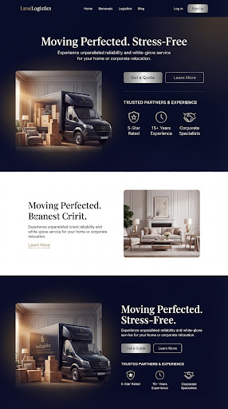
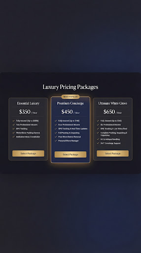
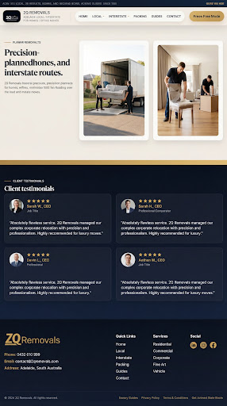

Premium Hero & Trust Section
Cinematic navy hero, editorial trust block, and a compact closing promo band.
These HTML pages were reconstructed from the downloaded Stitch screenshots because the project did not expose hosted htmlCode files for the requested screen IDs.

Cinematic navy hero, editorial trust block, and a compact closing promo band.
Simple black presentation stage centered around the existing ZQ Removals logo asset.

Three-card premium pricing layout with a highlighted concierge package and restrained glow.

Editorial white intro, gold divider, four testimonial cards, and a premium multi-column footer.